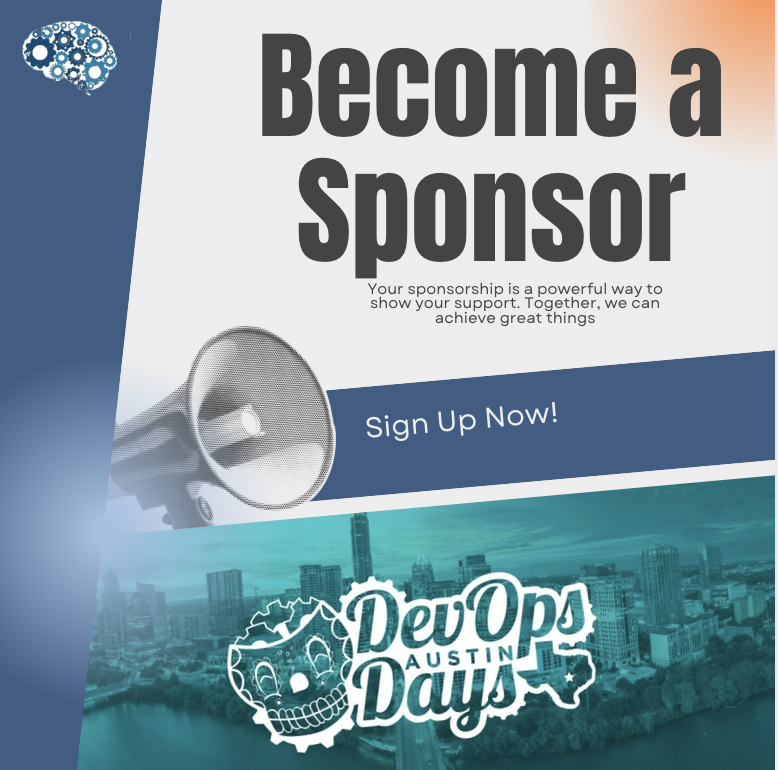
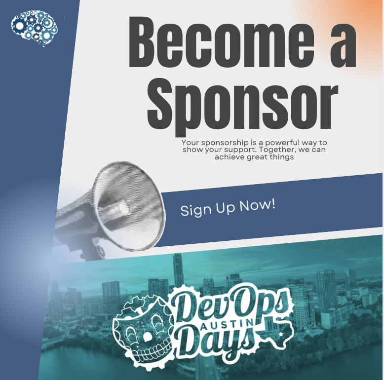
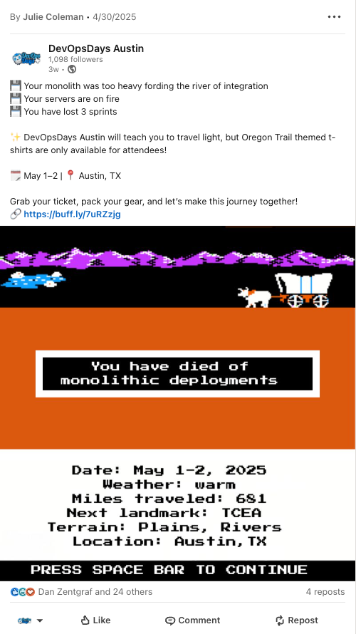
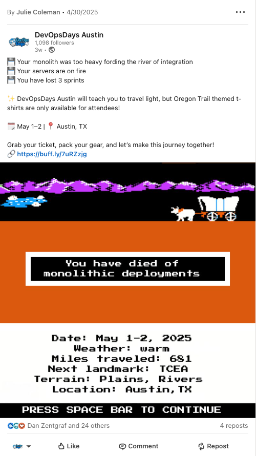

Content for Social Media Posts @DevOpsDays Austin
As a marketing organizer, I created a series of social media posts for
the
DevOpsDays Austin
conference. The goal was to promote the event and engage with the
community. The posts were designed to be visually appealing and
informative, highlighting key speakers, sessions, and networking
opportunities. This is my first year as a marketing organizer for
DevOpsDays Austin, and I hope to continue learning and iterating.
Content Examples
I regularly created content for social media using Canva. Here are some
examples of content I created for DevOpsDays Austin 2025.


 



Post Examples
I created a series of posts to promote the event and engage with the
community. I used different user personas to craft posts targeting students, individual contributors, managers, recruiters, and sponsors. At DevOpsDays, we also never miss an opportunity to pass on a good
dad joke or some nostalgic humor.
 

Example Social Media Calendar
I created a social media calendar to plan and organize the content
strategy for DevOpsDays Austin 2025. The calendar includes details such
as post dates, times, content types, descriptions, and calls to action.
I often filled out several weeks worth of posts in advance. This helped ensure a consistent and engaging presence on social media
leading up to the event. This is an example of a social media calendar, but the real calendar was created with Buffer, which integrates with Canva and allows scheduling posts in advance.
| Date | Time | Post Description | Visual Description | Call to Action | Post Content |
|---|---|---|---|---|---|
| 06/01/2025 | 9:00 | Sponsor shoutout | Graphic with sponsor blurb and sponsor logo | Visit our website |
üéâ We're happy to welcome Crash Override as our Food Sponsor!
We're excited to have you at hashtag#DevOpsDaysAustin 2025, May
1st-2nd at TCEA Austin!
Learn more about DevOpsDays Austin ‚û°Ô∏è üîó https://buff.ly/abc123 #DevOpsDays #TechConference #TechCommunity #DevOpsAustin |
| 06/03/2025 | 14:00 | Speaker spotlight | Speaker headshot, event logo | Learn More |
We are thrilled to announce that Daniel Ward will be joining us
at #DevOpsDaysAustin! üéâ Daniel's insights into fostering
inclusive team environments will help us understand why some
team members are less vocal and how we can lead our teams to
better collaboration and innovation. This session will provide
practical strategies to ensure everyone's voice is heard,
ultimately benefiting the whole team. Let's meet together to
learn and grow! ü§ù
See our amazing lineup of speakers ‚û°Ô∏è https://buff.ly/abc123 Connect with Daniel üîó https://buff.ly/abc123 #DevOpsAustin #SpeakerSpotlight #TechCommunity #Inclusion |
| 06/05/2025 | 09:00 | Tshirt-teaser | Image of our Oregon Trail themed t-shirt | Buy Tickets |
üö® There's only ONE day left to snag tickets to DevOpsDays
Austin. Our event theme is "DevOps is a Journey" and that means
we'll have Oregon Trail themed swag like this cool t-shirt. But
you can only get one if you attend. Get your ticket NOW to be
admitted into the conference; don't die of dis-entry! üéüÔ∏è https://buff.ly/abc123 #DevOpsAustin #DevOps #DevOpsSwag #AustinTech |
| 06/07/2025 | 12:00 | Less than 100 tickets left | Image of branded background with overlay text saying there are less than 100 tickets left | Buy Tickets! | üêÇ DevOpsDays Austin tickets are stampeding out the door faster than a bug escaping QA. If you‚Äôve been waiting to grab your spot, now‚Äôs the time. Once these last tickets are gone, they‚Äôre GONE. üéüÔ∏è Snag your ticket now: https://buff.ly/abc123 #DevOpsDays Austin #DevOps #ATXTech |
| 06/10/2025 | 16:00 | Discount tickets Available | DevOpsLogo | Fill Out the Form | üå± After a tough year of transitions across the tech industry, we know many are looking for connection, community, and a path forward. Our theme is "DevOps is a Journey" and we're here for you wherever you are on your journey. We have discounted tickets available for Austin locals‚Äîparticularly students, people who are unemployed or have income constraints, and members of communities which are under-represented at tech events. You can find the form to request your discount ticket on https://buff.ly/abc123 But the form is ONLY up until April 30th, so act fast! üèÉ‚Äç‚ôÇÔ∏è#DevOpsDays #TechCommunity #DevOps #TechForAll |
| 06/14/2025 | 15:00 | Call For Sponsors | Image of our mascot with a bullhorn | Sponsor us! | üì¢ Why Sponsor DevOpsDays Austin? ‚úÖ Engage Directly with top DevOps engineers, SREs, and decision-makers ‚úÖ Boost Visibility through on-site branding and digital promotions ‚úÖ Build Brand Trust by joining a community- not just an event. This is a volunteer-run, grassroots conference where engagement matters. Check out the perks of sponsoring on our website at https://buff.ly/abc123 #DevOpsDaysAustin #SponsorOpportunity #CommunitySupport |
| 06/15/2025 | 18:00 | Last call for registration | Animated text, event logo | Sign Up | üöÄ Choose Your DevOps Journey: ‚û°Ô∏è Move fast & break things (uh-oh, rollback time) ‚û°Ô∏è Adopt Platform Engineering (a smoother trail ahead?) ‚û°Ô∏è Ignore DevOps best practices (You have died of toil) Every company‚Äôs DevOps journey looks different, but one thing is certain‚Äîit's always evolving! Join DevOpsDays Austin, where we‚Äôll explore the transformations shaping our industry. Learn from those who've forded the river and made it to scalable, reliable architectures‚Äîand share your own trail stories. üóìÔ∏è May 1-2, 2025 üìç Austin, TX Don‚Äôt travel alone. Join our wagon train: https://buff.ly/abc123 #DevOpsDaysAustin #DevOpsJourney #SoftwareEngineering #PlatformEngineering |